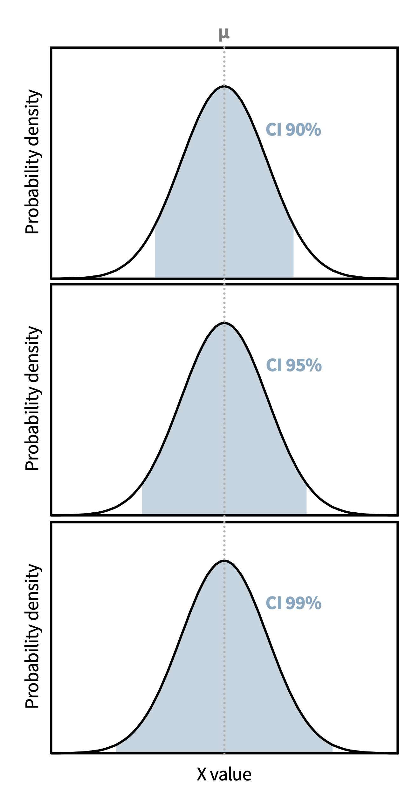
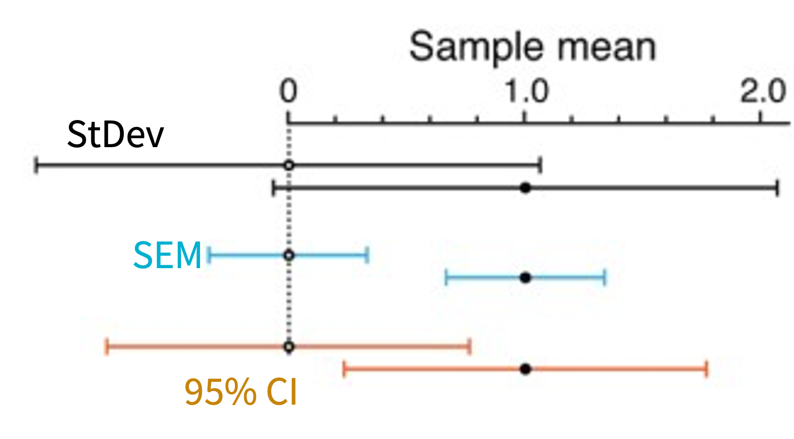

7. Statistics by Estimation
This session covers estimation
— the standard deviation, - the standard error of the mean, - the confidence interval (actually towards inferential statistics…), and — and the Python to compute them.
Along the way, we restart introducing functions, so we can wrap the calculation into a single reusable tool.
Set up for coding
To run the code blocks below, make sure you run this one first!
Common metrics for evaluating variance
Three distinct metrics re often used to describe the spread or uncertainty in a dataset (sample): Standard deviation, Standard Error, and Confidence Intervals. These metrics are not interchangeable. Knowing when to use each is one of the most practically important skills in applied statistics. All three derive from variance, but they answer different questions.
Standard Deviation (StDev)
Standard deviation describes how widely scattered individual data points are around the sample mean, and how accurately the mean represents the collected data.
\[s = \sqrt{\frac{1}{n-1}\sum_{i=1}^{n}(x_i - \bar{x})^2}\]
Note: the StDev for the sample is used (with the n-1 correction, Bessel’s correction).
- Describes the spread of individual data points.
- A descriptive statistic — it reflects variability in the data itself, not the precision of an estimate.
- Report it when describing how variable the measurements are (e.g. the scatter of replicates on a bar or box plot).
How can we calculate the StDev in python? There are actually many built in tools already, so we don’t NEED to explicitly code the math above if we know the standard tools.
Let’s first calculate the StDev with Python’s built-in statistics package. You can read about the syntax at the documentation link.
Let’s next calculate the StDev with the scipy stats package. Again, you can read about the syntax at the documentation link.
Okay, now let’s try the StDev with the Numpy package. Again, you can read about the syntax at the documentation link.
Wait, why are they not all the same?
Check out the numpy documentation for standard deviation and see if you can identify and fix the problem in the cell with the Numpy calculation.
Numpy does not automatically make the correction for a sample instead of a population. So you need to specify that the delta degrees of freedom (the amount that you are subtracting from n) is 1. np_stdev = np.std(data, ddof=1)
Standard Error of the Mean (SEM)
The SEM describes how precisely the sample mean estimates the true population mean.
\[\text{SEM} = \frac{s}{\sqrt{n}}\]
- Describes the precision of the estimated mean, not the variability of the data.
- Report it for inferential purposes — calculating confidence intervals and p-values.
SEM always looks smaller than StDev. Not because the data are tighter — because SEM measures something different. Illustrating SEM when StDev is the appropriate metric makes data look more reproducible than it is. This is a common form of misleading presentation.
Below can you add code to calculate and print the SEM for the dataset?
- Test out calculating directly, using the square root function
math.sqrt(value) - Search the documentation for scipy to learn the pre-built tool.
Do the methods match?
Some solutions
calc_sem = pystats.stdev(data)/math.sqrt(len(data))
print(f"{calc_sem:.2f}")
scipy_sem = spstats.sem(data)
print(f"{scipy_sem:.2f}")
Confidence Intervals (CI)
A confidence interval quantifies the uncertainty around an estimated parameter, such as the mean.
Definition: a 95% CI is a range computed such that, if you were to repeat the experiment many times, building a CI each time, 95% of those intervals would contain the true population mean.
CIs can be any percentage. Below you can see how different CIs cover a dataset.

Common Misunderstandings of CIs
These statements are incorrect:
“There is a 95% probability that the true mean lies within this specific interval.”“95% of the data fall within the 95% CI.”
The 95% refers to the procedure, not to any specific calculated interval. Once you have a specific interval, the true mean either is or is not inside it. The correct mental model is about the reliability of the estimation procedure.
The second misconception confuses the CI with a prediction interval: the CI is about the mean, not where individual data points fall. For n = 5 or 10, the CI is much narrower than the spread of the data.
Often, students find the meaning of the CI to be frustratingly unsatisfying. They are still important to learn because of their high frequency in data reporting.
However, if you too feel like this, I encourage you to stick around for session 14 on Bayes statistics, where we will consider an estimation method that might be more satisfying. We still need to learn a lot more before we can get there though!
Mathematics of CIs
For the data from a normal distribution, the 95% CI for the mean is:
\[\text{CI} = \bar{x} \pm z \cdot \text{SEM}\]
where \(z\) is the critical value from the z-distribution with \(n-1\) degrees of freedom.
For data from a t-distribution, the 95% CI for the mean is:
\[\text{CI} = \bar{x} \pm t_{\alpha/2,\, n-1} \cdot \text{SEM}\]
where \(t_{\alpha/2,\,n-1}\) is the critical value from the t-distribution with \(n-1\) degrees of freedom (for a 95% CI, \(\alpha = 0.05\), so \(t_{0.025,\,n-1}\)).
Both \(z\) and \(t_{\alpha/2,\,n-1}\) can be found in look up tables, but in practice, we don’t calculate the CIs by hand, we use a computer that can determine these values.
Below is an example of how we can calculate the CI for a dataset using scipy’s tool for confidence intervals.
Refresher: why is it ci95[0] and ci95[1]? what is this doing? Hint: what does print(ci95) show: a scalar variable or a more complex output? Do you remember how to check the “type” of a variable
In this course, we will not cover the mathematics behind CI calculations, but if you are interested the relevant information can be found through researching the cumulative distribution function (CDF) and the percent point function (PPF).
Why are CIs different for the normal distribution and the t-distribution?
If we think back to the normal distribution and the t-distribution, they have different shapes. Thus the math used to describe the expected shape of the dataset is different.

Reusable code blocks in Python: Functions
Introduction to python functions
Above, we generated code each time we wanted to calculate a parameter, this gets tedious if we want to perform the same calculations multiple times. For example, for every dataset, we might want to calculate the mean, sample size, stdev, SEM, CI95. Instead of explicitly writing each step out every time, we very often we want to build reusable code. Why?
- So that we don’t have to do the same thing over and over again. Efficiency!
- So that we don’t introduce errors when we are having to repeat ourselves. Reliability!
- So that anyone running the code gets the same result the same way every time. Reproducibility!
- So the logic is written and tested once, then trusted everywhere it’s used. Consistency!
- So that when requirements change, you fix the logic in one place instead of hunting down every copy. Maintainability!
- So the code can be read, checked, and reused by others. Transparency and Shareability!
One of the simplest forms of reusable code in Python is a Function. Most functions that users write follow the shape below.
def function_name(parameter1, parameter2, optional_param=default_value):
"""Optional text (termed docstring) describing the function."""
# operations here (termed the body of the function)
return resultWe have already used many functions in the sessions: print(), len(), pd.DataFrame().
Parameters vs. arguments: These two words are often used interchangeably, but they refer to different things. A parameter is the variable named in the function definition, a placeholder. An argument is the actual value you supply for that parameter when you call the function.
def greet(name): # `name` is a parameter
print("Hello, " + name)
greet("Students") # "Students" is an argumentLet’s read and then try to build some functions, so that we can better understand their structure and purpose.
First, let’s check out a function to perform a simple calculation: return the square of a number.
In the code above, change the argument so that you can test the function for different inputs.
Based on the shape of a function that is described above, in the cell below, can you create a power function that returns the result of a number raised to a given power?
\[result = number^{power}\]
Can you also set default values for the inputs?
def power_function(number, power=2):`
return number ** powerNOTE: in the function definition line, parameters that have default values must come after parameters without default values.
A function can return several values at once using a dictionary, list, or tuple:
Building functions for statistics
Now that we have seen a few functions, let’s apply this knowledge to build functions for statistical calculations.
In Python:
def analysis(dataset, confidence=0.95):
"""Return mean, StDev, SEM, and CI for a dataset (list)."""
n = len(dataset)
mean = pystats.mean(dataset)
stdev = pystats.stdev(dataset)
sem = spstats.sem(dataset)
ci_lower_upper = spstats.t.interval(confidence=confidence, df=n-1)
return {
"n": n,
"mean": mean,
"stdev": stdev,
"sem": sem,
f"ci{confidence}_interval": ci_lower_upper,
}
result = analysis(data)
print(result)Observing features of StDev, SEM, and CI
In the in person session, we will use the function that you created above to study features of these metrics and to analyze datasets.
| Metric | What it measures | Changes with n? | Use case |
|---|---|---|---|
| StDev | Spread of individual values | Not systematically | Describing data variability |
| SEM | Precision of the mean estimate | Shrinks as 1/√n | Calculating CI and p-values |
| CI | Uncertainty around the mean estimate | Shrinks with n | Reporting estimates and comparisons |
It is important to use the appropriate metric when reporting data, AND also labeling the dataset so that observers can correctly interpret your data. The figure below illustrates why visualization with these metrics can be confusing without approprate labeling.

Without clear labeling of which metric is shown, one can incorrectly interpret the data.
Further Reading
- 10.1007/s10654-016-0149-3 — Statistical tests, P values, confidence intervals, and power: a guide to misinterpretations (recommended before Session 8)
- 10.1038/nmeth.2659 — on error bars in figures
- 10.1083/jcb.200611141 — on error bars in cell biology
- StDev describes the spread of the data (≈constant with n); SEM describes the precision of the mean (shrinks as 1/√n).
- 95% CI = x̄ ± t·SEM, and refers to the procedure, not a specific interval.
- Don’t show SEM when StDev is the honest metric; always label error bars and report n.
- In Python: wrap reusable calculations in a function (
def, optional defaults, return a dict for multiple values).
Practice
The exercises for this session are provided as a Jupyter notebook on OLAT. Try calling estimate() on one of your own datasets, and confirm the SEM equals StDev / sqrt(n).